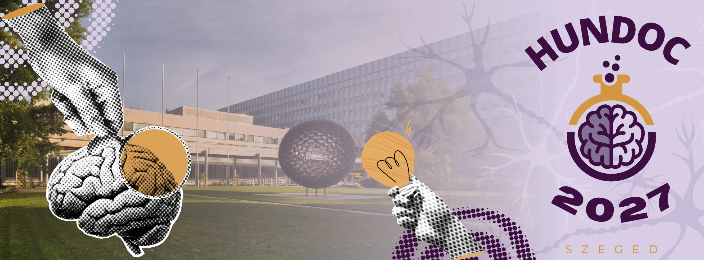

Invitation
10th Hungarian Neuroscience Doctoral Conference for Undergraduate Students, Graduate Students and Junior Postdocs
Dear Students and Young Researchers,
We are happy to announce the 10th Hungarian Neuroscience Doctoral Conference (HuNDoC 2027), which will be held on January 26, 2027, at the HUN-REN Biological Research Centre (HUN-REN BRC) Szeged, Hungary. The conference welcomes BSc, MSc students, PhD students and junior postdoctoral researchers interested in all areas of neuroscience.
HuNDoC provides an opportunity for early-career researchers from across Hungary to share their work, exchange ideas, and meet others in the field.
This year's program will include:
- Keynote lecture and round table discussion about possible career paths after finishing your degree
- Mini-poster whirlpool and short talk sessions highlighting your ongoing research in neuroscience
- Two informal networking time slots and lunch at the HUN-REN BRC to encourage discussion with fellow students, mentors, and colleagues
- A session focused on mental health in academia
- Relaxed night in the city center
Submitting an abstract is optional, but highly encouraged to facilitate practice of presentation and discussion skills in a safe space.
HuNDoC 2027 registration and abstract submission will be open through a Google form until
December 11, 2026. Participation is free for members of the Hungarian Neuroscience
Society (MITT) who paid their annual
membership fee (2,500 HUF for students, 5,000 HUF for young postdocs). To apply to the Society,
please visit:
MITT Regisztráció [HU] »
HNS Registration [EN] »
People who are not able to or do not want to register are asked to contact the organizers
(0.1.2).
Come meet fellow students, share your research and get inspired for your next steps in neuroscience!
The HuNDoC 2027 Organizing Committee
Ana Martins, Szilvia Veszelka, Fruzsina Walter (HUN-REN Biological Research Centre, Szeged) and
Rita Frank, Ákos
Menyhárt and Anna Törteli (University of Szeged)